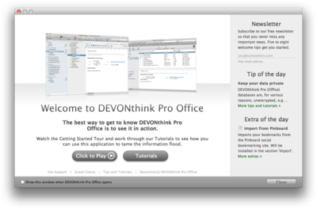
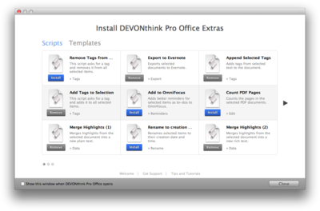

|
|
|
Assistant |
|
The integrated Assistant combines a welcome screen with a first launch assistant, tips, web and video tutorials, installable extras, and a suppport page that guides you through the available support options. Click here to open the Support Assistant.  Welcome This screen welcomes you when you start DEVONthink Pro Office for the very first time. It offers:
You can access all other screens of the assistant from here, too. First launch assistant The first launch assistant opens automatically the very first time you open DEVONthink Pro Office, and guides you through the first steps of using the application: creating a new database, installing the add-ons, and adjusting the preferences. Get support The support screen guides you through the three common steps for troubleshooting DEVONthink Pro Office. In addition, you can have your license code resent in case you don't have it anymore, request a trial extension, update your details in DEVONtechnologies' customer database, or buy an upgrade or a second license. Tips and tutorials Here you can find the latest tips and tutorials to help you squeeze the best out of DEVONthink Pro Office. Tutorials can be slideshows describing basic tasks in DEVONthink Pro Office or screencasts. Both tips and tutorials are updated live from DEVONtechnologies' server so it's a good idea to check back on a regular basis. The latest tip or tutorial is also always mentioned on the welcome screen. Install extras On the extras screen, DEVONthink Pro Office lists all available extras that you can download and install from DEVONtechnologies' server:
 Browse the list of extras and install them with the Install button. The last line of the description shows where in the Scripts or Templates menu the extra will show up after installation. Remove installed extras with the Remove button. The extras are updated live from DEVONtechnologies' server so it's a good idea to check back from time to time. The latest extra is also always mentioned on the welcome screen.
|